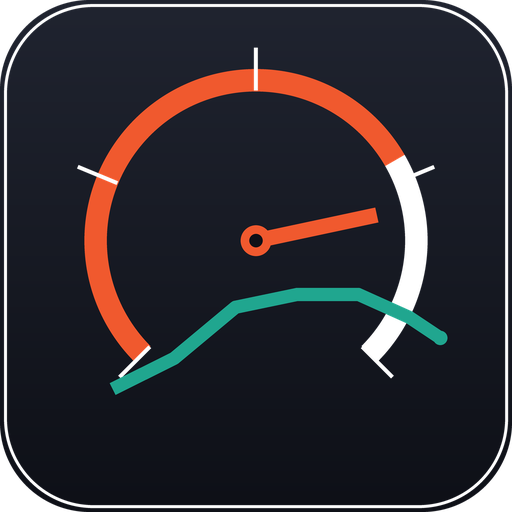

Desktop diagnostics and performance dashboard for the VW 3.0 V6 TDI (Amarok DDXC). Live data, fault codes, stock ECU backup — and tuning verified against the factory torque envelope, not a tuner's word.
Windows 10/11 · installer ≈ 80 MB · also runs on macOS & Linux from source
Live mode today: channels, DTCs, freeze frames. Flash read/write is gated behind ECU security access — the app labels what is real and what is simulated.
No cloud, no accounts, no phone-home. The monitor talks to the truck; nothing leaves your laptop.
RPM, rail pressure, boost, coolant, pedal — streamed over J2534 at 10 Hz with plausibility checks and rate limiting on every channel.
Read and clear DTCs with full freeze-frame context, plus diesel-specific analysis notes for the 3.0 TDI.
Chunked flash read with SHA-256 checksum, exercised end-to-end in simulation. On live hardware it refuses — honestly — until ECU security access is unlocked, because a fake backup is worse than none.
EWMA baselines and z-score deviation per channel, learned from your own truck. It flags what drifts, not what a forum post says.
Pulls run as clearly-labelled simulated self-checks against the manufacturer variant ladder — 550 stock → 580 VW transient → 700 Nm gearbox rating — with overboost overlay.
The dashboard serves over your LAN. Laptop talks to the truck; your phone or tablet is the display.
The interface can only ever address two modules. Everything else is refused at the protocol layer — not hidden in the UI, blocked in code. Destructive actions require a typed confirmation.
Works immediately in simulation mode — no hardware needed. Add a J2534 adapter later for live data.